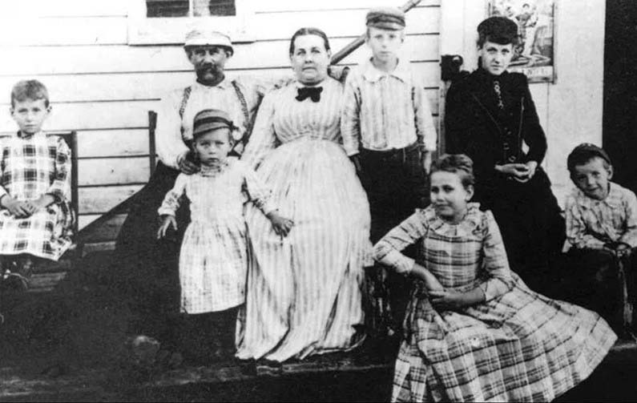
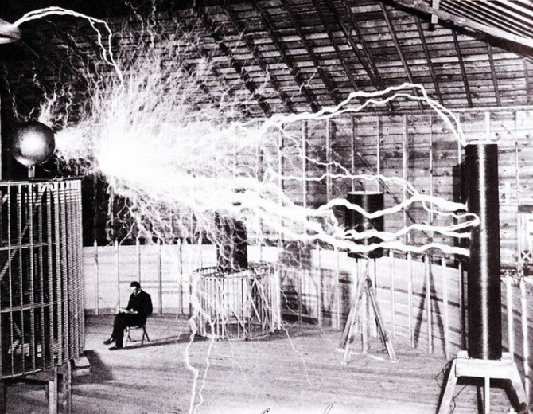

Timeline of Tesla's Life

Nikola Tesla's family: his father Milutin, his mother Duka, his older brother Dane, and his three sisters, Milka, Angelina and Marica. Nikola sits alone on the far left.
- 1859 - Nikola Tesla is believed to have been born at midnight. During his birth, lightning struck during a summer storm. Born to a Serbian Family in Smiljan
- 1870 - Nikola Tesla moved to a place known as Karlovac to complete his high school. Three years later, he went back to Smiljan and shortly after his arrival; he contracted cholera.
- 1875 - Tesla enrolled to a Polytechnic based on a military scholarship. He was a disciplined student and achieved the highest grades possible while passing various exams.
- 1880 - Tesla’s uncle collected money to help him relocate to Prague to finish his studies.
- 1881 - He moved to Budapest in Hungary, to work for a telegraph company. Upon arriving.
- 1882 - Tesla Goes To Work For Edison. He began working in a new industry by installing indoor lighting resources.
- 1885 - Tesla met with an attorney known as Lemuel Serrel, to help in the submission of various patents. These patents would later show Tesla's unique way of thinking.
- 1887 - Tesla Re-imagines The Electric Motor. Tesla came up with an induction motor that was operated by alternating current, a form of power that was becoming common in Europe and the USA.
- 1890 - Tesla Begins His Work On Wireless Power Transmission. He researched various approaches to transmitting power by inductive and capacitive coupling.

Nikola Tesla beside the prototype and patented Tesla Coil.
- 1891 - Tesla Patents The Tesla Coil
In mid 1891, at the age of 35, he became a naturalized citizen of the US. In the same year, he also patented his famous Tesla Coil.
- 1943 - Tesla's Death
In early 1943, at age 86, Tesla died in a Hotel Room in New York. He died alone, and his body was found by a maid who ignored a do not disturb sign on Tesla’s room. The assistant medical professional evaluated the body and determined the cause of death was related to coronary complications.